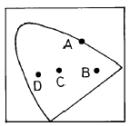
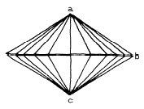
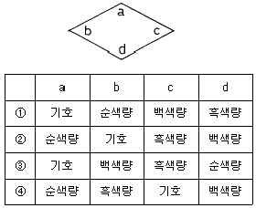
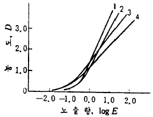

인쇄산업기사 (2003-05-25 기출문제)
1과목: 인쇄공학
1. 무선철 제책 과정과 비교할 때 양장제책 과정에만 있는 작업은?
- 접지(folding)
- 본문 엮기(thread sewing)
- 다듬재단(trimming)
- 접지모으기(gathering)
(정답률: 알수없음)

2. 오프셋 윤전기의 접지 장치가 아닌 것은?
- 슬리터(sliter)
- 삼각판(former)
- 하프덱크(halfdeck)
- 절단통(cutter cylinder)
(정답률: 알수없음)
3. 인쇄 잉크의 끈기와 탄력이 없을 때, 종이의 성질이 잉크를 받아들이지 못할 때, 건조제를 너무 많이 섞었을 때 일어나는 현상은?
- 파일링
- 쵸킹
- 크리스탈리제이션
- 유화
(정답률: 알수없음)
4. 다음 중 인쇄물의 표면가공 방법으로 사용하지 않는 것은?
- 비닐코팅
- 니스코팅
- 파우더링코팅
- 코팅프레스
(정답률: 알수없음)
5. 다음 중 안전교육이 꼭 필요한 대상과 가장 거리가 먼 것은?
- 회사에 처음 들어온 자
- 위험작업에 종사하고 있는 자
- 똑 같은 방법으로 안전지식과 기능이 숙달된 자
- 다른 공정에서 전입되어 온 자
(정답률: 알수없음)
6. 1차 유닛(Unit)에서의 잉크가 다음 단계의 블랭킷으로 전이되어 잉크시스템으로까지 전이되는 현상은?
- 고스트(Ghost)
- 역전이(Back trapping)
- 때묻음(Scumming)
- 롤링(Rolling)
(정답률: 알수없음)
7. 계면활성제(Surface active agent)의 종류가 아닌 것은?
- 비누
- 고급알콜
- 황산에스테르
- 무기염류
(정답률: 알수없음)
8. 오프셋인쇄에서 인쇄순서에 따라 잉크의 택(Tack)이 다른 경우가 많다. 가장 큰 이유는 무엇인가?
- 잉크의 전이현상에서 역전이를 방지하기 위해
- 다음에 인쇄되는 잉크의 전이량을 점차적으로 증가시키기 위해
- 인쇄물의 농도를 균일하게 하고 핀트를 맞추기 위해
- 용지의 신축을 줄이기 위해
(정답률: 알수없음)
9. 쵸킹(Chalking)현상을 설명한 것 중 맞는 것은?
- 인쇄후 인쇄면의 잉크가 가루가 되어 부서진다.
- 종이의 흡유 속도가 너무 느려 안료로부터 비히클이 분리되기 때문이다.
- 합성수지형 잉크에서 주로 나타나는 현상이다.
- 비코팅지 인쇄에서는 거의 나타나지 않는다.
(정답률: 알수없음)
10. 종이의 공극에 대한 설명 중 틀린 것은?
- 공극율은 종이의 다공성의 척도로서 종이부피 중 공기의 용적으로 계산한다.
- 비도공지보다 도공지가 모세관 반경이 크다.
- 인쇄평활성, 잉크흡수성과 밀접한 관계가 있다.
- 아트지보다 신문용지의 공극율이 크다.
(정답률: 알수없음)
11. 많은 양의 잉크가 용지에 묻으면 잉크의 표면을 최소화 할려는 응집력이 생긴다. 이것은 무엇 때문인가?
- 점도
- Vander waals의 힘
- 항복가
- 잉크의 밀도
(정답률: 알수없음)
12. 정전기 현상에 관한 설명이다. 옳지 않은 것은?
- 인쇄 유니트를 통과하면서 발생되어 종이 정돈을 방해한다.
- 인쇄, 마찰, 가열 등에 의해 발생한다.
- 가습장치를 설치하여 예방할 수 있다.
- 정전기가 발생하지 못하도록 인쇄속도를 높이고 습도를 낮추면 예방할 수 있다.
(정답률: 알수없음)
13. 점도(viscosity)에 대한 가장 올바른 설명은?
- 흐름에 대한 액체의 저항성
- 반고체 상태에서의 외력에 대한 유동도
- 물질이 응집하려는데 대한 외부 저항성
- 어떤 물질에 외력이 가해졌을 때 유동하는 흐름의 형태
(정답률: 알수없음)
14. 인쇄용지에 시즈닝(seasoning)을 하는 목적은?
- 종이의 pH를 조절하여 강산성화 방지
- 습도조절을 하여 종이의 신축 방지
- 평활도를 조절하여 고른 인쇄압 조절
- 표면을 코팅하여 잉크의 번짐 방지
(정답률: 알수없음)
15. 인쇄 제판 공정 중 수질오염에 대한 대책으로 옳은 것은?
- 크롬 감광액을 사용한다.
- 과망간산 탈막액을 사용한다.
- 수정액은 물과 희석하여 버린다.
- 세척기 폐액은 여과장치를 이용한다.
(정답률: 알수없음)
16. 인쇄실의 이상적인 조명조건이 아닌 것은?
- 항상 가장 최대의(강력한) 조도를 유지해야 한다.
- 광원이 흔들려서는 안된다.
- 적당한 입체감을 갖는 시야를 만들어야 한다.
- 광색이 작업의 성질과 부합되어야 한다.
(정답률: 알수없음)
17. 축임물의 pH가 너무 낮아서 일어나는 문제점은?
- 화선이 가늘어진다.
- 더러움이 발생한다.
- 도트게인이 발생한다.
- 잉크 전이율이 낮아진다.
(정답률: 알수없음)
18. 요변성이 발생하는 이유가 되지 않는 것은?
- 잉크의 건조
- 분자들 사이의 전기적 이중층
- 경시변화
- 안료와 비히클의 삼차원적인 망상 구조
(정답률: 알수없음)
19. 잉크나 물 등의 액체가 피인쇄체에 묻을 때 일어나는 젖음 현상은?
- 접착 젖음
- 침투 젖음
- 침적 젖음
- 확산 젖음
(정답률: 알수없음)
20. 작은 반점의 형태로 착육 불량의 얼룩이 나타나 배껍질 같은 인쇄면이 되는 현상은?
- Snow-flake
- Mottling
- Dot gain
- Tinting
(정답률: 알수없음)
2과목: 인쇄재료학
21. 순백색의 잉크를 제조하기 위해 사용하는 안료로 알맞지 않는 것은?
- 산화티탄
- 아연화
- 침강성 황산바륨
- 램프블랙
(정답률: 알수없음)
22. 펄프를 물속에서 기계적으로 두들겨서 분산시키는 조작을 무엇이라 하는가?
- 사이징
- 전충
- 윤내기
- 비팅
(정답률: 알수없음)
23. 종이의 인쇄적성에 관한 물리성과 가장 관계가 없는 것은?
- 종이의 강도
- 종이의 표면강도(뜯김 및 저항성)
- 표면의 평활성
- 종이의 백색도
(정답률: 알수없음)
24. 고무 블랭킷이나 고무 롤러에 주로 사용되는 합성고무가 아닌 것은?
- 네오프렌 고무
- 티오코르 고무
- 아라비아 고무
- 니트릴 고무
(정답률: 알수없음)
25. 종이 제조 과정에서 미세섬유나 충전제가 탈수와 함께 배출되는 것을 조절하게 되는데 이것을 보류라고 한다. 이 목적을 위해 종이 제조에서 가장 널리 사용하는 물질은?
- 탄산칼슘
- 탈크
- 전분
- 로진
(정답률: 알수없음)
26. 종이의 표면과 이면의 수분 흡수율의 차이, 표리간의 충전제의 분포가 극도로 차이가 있을 경우, 대기의 습도가 갑자기 변화할 경우 용지는 기계방향 또는 종이 방향으로 변형을 일으킨다. 이 변형을 나타내는 용어는?
- 인장강도
- 인열강도
- 코클링
- 컬
(정답률: 알수없음)
27. 잉크의 투명도를 측정하기 위하여 사용되는 것은?
- 페이도 미터
- 펀드식 크립토 미터
- 밴드 비스코 미터
- 잉코 미터
(정답률: 알수없음)
28. 할로겐화은 결정 고유의 감광 파장영역은?
- 200-400nm
- 350-480nm
- 400-700nm
- 900-1200nm
(정답률: 알수없음)
29. 현상액 취급시 옳지 못한 방법은?
- 설명서에 따라 용해시킨다.
- 반드시 황색이나 흰색 유리병에 보관한다.
- 하루 전에 용해하여 숙성시킨후 사용한다.
- 직사 광선을 피하고 환기가 좋은 곳에 보관한다.
(정답률: 알수없음)
30. 특히 다색인쇄 공정에서 종이가 갖추어야 할 가장 중요한 물성은?
- 종이 치수의 안정성
- 불투명도
- 사이즈도
- 파열강도
(정답률: 알수없음)
31. 평판재료인 석판석의 주성분은?
- 산화아연
- 산화철
- 탄산칼슘
- 탄산나트륨
(정답률: 알수없음)
32. 잉크의 성질 중 잘못된 설명은?
- 일반적으로 그라비어 잉크는 점도가 낮고 평판잉크는 점도가 높다.
- 인쇄 잉크는 일반적으로 초기에는 단단하나 잘 이기면 유동성이 생긴다.
- 인쇄 잉크의 끈기값이 크면 종이의 뜯김 현상이 발생한다.
- 항복값은 유동을 가장 많이 일으킬 수 있는 최대한의 힘이다.
(정답률: 알수없음)
33. 종이는 외부의 습도가 높으면 함습하고 외부의 습도가 낮으면 탈습하여 평형상태를 이루게 된다. 동일한 외부습도에서도 함습때와 탈습때의 종이 함수율이 다르게 되는데 이를 무엇이라 하는가?
- 종이의 히스테리시스
- 종이의 사이징
- 종이의 함수율
- 종이의 시즈닝
(정답률: 알수없음)
34. 평판 인쇄에서 축임물에 대한 설명으로 잘못된 것은?
- 비화선부에 잉크 부착을 방지한다.
- 화선부의 변화를 방지한다.
- 판면 냉각 효과가 있다.
- 축임물의 양이 많을수록 유화현상은 줄어든다.
(정답률: 알수없음)
35. 필름 지지체가 지녀야 할 특성이 아닌 것은?
- 평면성이 우수할 것
- 무색 투명할 것
- 신축이 적을 것
- 대전이 잘 될 것
(정답률: 알수없음)
36. 계면활성제라고 볼 수 없는 것은?
- 비누
- 알킬슬포네이트
- 폴리비닐알콜
- 고급 알콜
(정답률: 알수없음)
37. 2∼16매 정도의 종이를 측정기에 끼워서 측정한 값을 1매당 g수로 환산하여 나타내며, 엘멘도르프형 시험기를 사용하여 측정하는 것은?
- 인장강도
- 인열강도
- 사이즈도
- 표면강도
(정답률: 알수없음)
38. 사진 유제의 감광물질로서 사용하지 않는 것은?
- AgCl
- AgBr
- AgI
- AgF
(정답률: 알수없음)
39. 종이의 시험법 중 잉크나 물에 대한 침투 저항성을 지칭하는 것은?
- 백색도
- 습유도
- 사이즈도
- 광택도
(정답률: 알수없음)
40. 잉크의 부착력을 좋게하는 친유성기가 아닌 것은?
- -CH3
- (-CH2-)n
- -COOH
(정답률: 알수없음)
3과목: 인쇄색채학
41. 영-헬름홀쯔(Young-Helmholtz)의 색각설에서 원색의 조건과 관계가 먼 것은?
- 다른 색광을 혼합하여 만들 수 없는 색
- 더 이상 분광할 수 없는 색
- 더 이상 측색할 수 없는 색
- 원색을 모두 혼합하였을 때 백색광이 되는 색
(정답률: 알수없음)
42. 색에는 무거운 것으로 보이는 것과 가벼운 것으로 보이는 색이 있다. 다음 중 무겁게 보이는 것부터 가볍게 보이는 색 순으로 바르게 나열된 것은?
- 파랑-주황-흰색-초록
- 주황-흰색-파랑-초록
- 파랑-주황-초록-흰색
- 주황-초록-파랑-흰색
(정답률: 알수없음)
43. 광원색에 관한 올바른 설명은?
- 물체 표면에서 반사되어 눈에 들어오는 색
- 광원에서 발생하는 빛의 색
- 색유리를 통과한 색
- 물체에 흡수된 색
(정답률: 알수없음)
44. 다음 그림의 CIE 색도도에서 순도가 가장 높은 색은?

- A
- B
- C
- D
(정답률: 알수없음)
45. 색입체에 대한 설명으로 맞는 것은?
- 색상은 원으로 명도는 방사선으로 채도는 직선으로 각기 배열한다.
- 채도는 무채색 축에 들어가면 고채도, 바깥 둘레로 나오면 저채도가 된다.
- 색은 외부로 나아갈수록 채도가 높아진다.
- 무채색 축은 올라가면 저명도, 내려가면 고명도가 된다.
(정답률: 알수없음)
46. 색의 선명도, 색채의 강하고 약한 정도를 말하는 것은?
- 색상
- 명도
- 채도
- 무채색
(정답률: 알수없음)
47. 오스트발트 색입체의 설명으로 맞는 것은?

- a-흰색 b-순색 c-검정
- a-검정 b-순색 c-흰색
- a-순색 b-흰색 c-검정
- a-순색 b-검정 c-흰색
(정답률: 알수없음)
48. 배색에 있어 명도가 높은 것을 위쪽에 낮은 것을 아래쪽에 배치하는 방법은 어떤 효과를 이용하기 위한 것인가?
- 흥분감
- 불안감
- 중량감
- 색연상
(정답률: 알수없음)
49. 먼셀 기호의 표기법으로 맞는 것은?
- HC/V
- HV/C
- CV/H
- CH/V
(정답률: 알수없음)
50. 색을 빛의 성질이나 특성으로 분석· 설명하기 위해 빛의 양을 측정하는 데 이것을 측광이라고 부른다. 다음 중 틀린 것은?
- 측광은 일반측광과 분광측광으로 나뉜다.
- 측광에서는 가시광선을 색광이라고 부른다.
- 분광측광에서는 빛을 스펙트럼으로 분해해서 그 각 파장별 성분에 대해 측정한다.
- 측광을 위한 측색시 물리적인 계기를 사용하여 비교하는 경우를 시감측색이라고 부른다.
(정답률: 알수없음)
51. 조명 및 관측조건이 다르더라도 주관적으로 물체색이 변화 되어 보이지 않는 현상을 무엇이라 하는가?
- 동화효과
- 색각항상
- 조건등색
- 색순응
(정답률: 알수없음)
52. 일반적으로 가장 가볍게 느껴지는 색은?
- 짙은 갈색
- 노랑색(Y)
- 파랑색(B)
- 주황색(YR)
(정답률: 알수없음)
53. CRT 모니터 화면의 이미지 색으로 부터 출력물을 생성할 때 색상에 영향을 주는 요인으로서 가장 부적합한 것은?
- 색온도 특성
- 작업실 밝기 특성
- 출력되는 용지의 특성
- 보색 특성
(정답률: 알수없음)
54. 가법혼색에 대한 설명으로 맞지 않는 것은?
- 색광을 겹치면 겹칠수록 색이 더욱 밝아진다.
- 적색과 녹색의 혼색은 황색이 된다.
- 녹색과 청자색의 혼색은 적자색이 된다.
- 적색과 녹색과 청자색의 3색을 동시에 혼합하면 백색광이 된다.
(정답률: 알수없음)
55. 두색이 이웃해 있을때 경계부분에서 대비현상이 다른 곳보다 더 강하게 일어나는 현상을 무엇이라 하는가?
- 연변대비
- 색상대비
- 명도대비
- 채도대비
(정답률: 알수없음)
56. 자외선에 대한 설명으로 맞지 않는 것은?
- 파장이 380nm이하의 전자파를 말한다.
- 자외선이 높은 에너지가 변색을 일으킬 가능성이 크다.
- 자외선은 고온의 아크등에서 많이 복사된다.
- 자외선은 파장이 짧고 에너지가 낮다.
(정답률: 알수없음)
57. 물 위에 얇게 떠 있는 기름의 경우나 비누 물거품 등의 경우에 나타나는 현상으로 빛의 간섭에 의해 나타나는 모양새를 지칭하는 말로 옳은 것은?
- 베버-페히너의 법칙
- 조건등색
- 병치혼색
- 뉴톤(Newton) 원무늬
(정답률: 알수없음)
58. 오스트발트의 등색상 삼각형에서 다음 그림에 들어갈 단어가 맞는 것은?

- ①
- ②
- ③
- ④
(정답률: 알수없음)
59. 프로세스 컬러 잉크(yellow, magenta, cyan)로 컬러 인쇄물을 제작하는 과정에서 각 잉크가 지니고 있는 분광 특성이 기준 분광 반사율과 차이가 나는데 이러한 현상을 조정하는 작업은?
- 색조 보정 작업
- 스크린 선수 조정 작업
- 무아레 조정 작업
- 도트 게인 조정 작업
(정답률: 알수없음)
60. 빛이 2개 이상의 파(波)가 한점에서 만날 때 성분파(成分波)의 위상관계(位相關係)에 의해 합성파(合成派)의 진폭이 변화함으로써 생기는 현상은?
- 굴절
- 회절
- 간섭
- 편광
(정답률: 알수없음)
4과목: 사진제판공학
61. 망점 면적을 평가하는데 가장 적당하지 않은 것은?
- 시각에 의한 판정
- 확대 투영에 의한 판정
- 농도계에 의한 판정
- 카메라 촬영(축소)에 의한 판정
(정답률: 알수없음)
62. 다음은 연조형, 보통형, 경조형, UV연조형 그라비어 필름의 특성곡선을 나타낸 것이다. UV연조형 특성곡선은?

- 1
- 2
- 3
- 4
(정답률: 알수없음)
63. 전산편집 시스템의 출력장치가 아닌 것은?
- 레이저 프린터
- 인화지, 필름출력기
- 이미지 스캐너
- 플로터
(정답률: 알수없음)
64. I1 = 입사광의 세기, I2 = 시료를 투과한 빛의 세기, T=투과도, O=불투과도라 할 때 투과농도 Dt는?
- log(1/T)
- I2 / I1
- I1× I2
- log T
(정답률: 알수없음)
65. 구하여진 적정노출 시간이 짧아 정확한 노출을 주기 어려울 때 사용하는 필터는?
- CC 필터
- ND 필터
- PL 필터
- UV 필터
(정답률: 알수없음)
66. 스크린 제판에서 감광액 도포 작업에 대한 설명 중 옳지 않은 것은?
- 감광액 도포는 반드시 1회만 해야 한다.
- 화선의 굵기에 따라 감광액의 두께를 달리할 수 있다.
- 감광액은 스크린사 양쪽에 도포한다.
- 감광액을 도포할 때 일반적으로 안전등하에서 하고 건조시켜야 한다.
(정답률: 알수없음)
67. 명실용 필름에 노출을 주기 위하여 사용하는 빛으로 가장 좋은 것은?
- 자외선
- 녹색광
- 적색광
- 적외선
(정답률: 알수없음)
68. 광원의 거리가 일정한 경우의 적정 빛쬠시간을 기준으로 적정 빛쬠량을 구하는 식은?
- (변경한 거리/원래의 거리)2 × 원래의 빛쬠시간
- (원래의 거리/변경한 거리)2 × 원래의 빛쬠시간
- (변경한 빛쬠시간/원래의 빛쬠시간)2 × 원래의 거리
- (원래의 빛쬠시간/변경한 빛쬠시간)2 × 변경한 거리
(정답률: 알수없음)
69. 스크린 망사는 흰색의 것을 주로 사용하나 황색 또는 적색으로 된 것을 사용하기도 한다. 그 이유는 무엇인가?
- 화선을 식별하기 좋아서
- 스크린 망사에 반사되는 빛을 흡수하여 할레이션을 방지하기 위해
- 감광액의 건조를 돕기 위해서
- 감광액의 도포가 두껍게 되기 때문에
(정답률: 알수없음)
70. 간이교정(pre-proof)의 조건으로 옳지 않은 것은?
- 단시간에 만들어져야 한다.
- 반복작업을 하더라도 동일한 결과가 얻어지는 안정성이 있어야 한다.
- 교정인쇄물과 거의 같으나 교정지의 대용으로는 사용할 수 없다.
- 작업장의 온,습도의 변화에 적응되어야 한다.
(정답률: 알수없음)
71. PS판 제조 과정 중 알루미늄판에 부착해 있는 지방성분(가공유)을 제거하는 공정은 ?
- 감광액도포
- 탈지
- 연마
- 친수화 처리
(정답률: 알수없음)
72. 감광재료에 흐림(fog) 현상이 일어나는 이유가 아닌 것은?
- 보관 중 겹쳐 쌓았을 때
- 저감도 것에서 많이 나타난다.
- 보관 중 고온 다습일 때
- 암실안에 빛이 들어오거나 안전등에 대한 부주의 때문
(정답률: 알수없음)
73. 망촬영된 negative film의 망점 주위가 흐리고 중심부에는 진한 망점을 무엇이라고 하는가?
- hard dot
- soft dot
- chain dot
- square dot
(정답률: 알수없음)
74. 감광재료에 대하여 일정한 파장의 노출을 할 경우 그 노출량(E)을 구하는 식은? (단, 조도 : i, 노출시간 : T)
- E = i × T
- E = T / i
- E = i / T
- E = i2 × T
(정답률: 알수없음)
75. 바코드 인쇄의 제판에 사용되는 바코드 원고는 어떤 형태가 가장 바람직한가?
- 포지티브 반사원고
- 네거티브 반사원고
- 포지티브 필름
- 네거티브 필름
(정답률: 알수없음)
76. 컴퓨터를 이용해서 화상처리를 할 때 화상을 작은 점으로 주사해서 각 점의 색과 농담을 수치화하는데 이 화상을 주사하는 디지털 이미지의 최소단위에 해당하는 것은?
- point
- dot
- scanning
- pixel
(정답률: 알수없음)
77. PS판 제조공정 중 양극산화의 주된 목적은?
- 감광층의 보존성 향상 및 친유성 향상
- 판 표면의 기름기 제거 및 더러움 방지
- 판 표면의 친수성과 내마모성 향상
- 판 표면의 산화방지 및 마모성 증대
(정답률: 알수없음)
78. 도트에칭(dot etching)이란?
- 판의 내쇄력 증가
- 필름의 신축성 방지
- 평오목판의 망점부식
- 필름의 망점수정
(정답률: 알수없음)
79. 단위 면적에 대한 조도는 광원으로 부터의 거리와 어떤 관계가 있는가?
- 제곱에 비례
- 비례
- 제곱에 반비례
- 반비례
(정답률: 알수없음)
80. 촬영한 필름을 즉시 현상하지 않으면 주로 어떤 결과를 가져오는가?
- 솔라리제이션
- 위사진효과
- 허셀효과
- 잠상퇴행현상
(정답률: 알수없음)